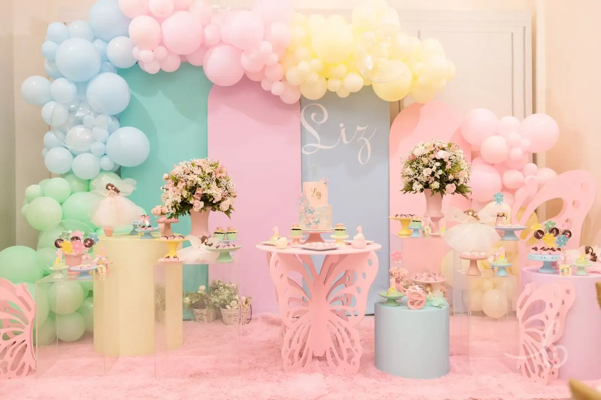
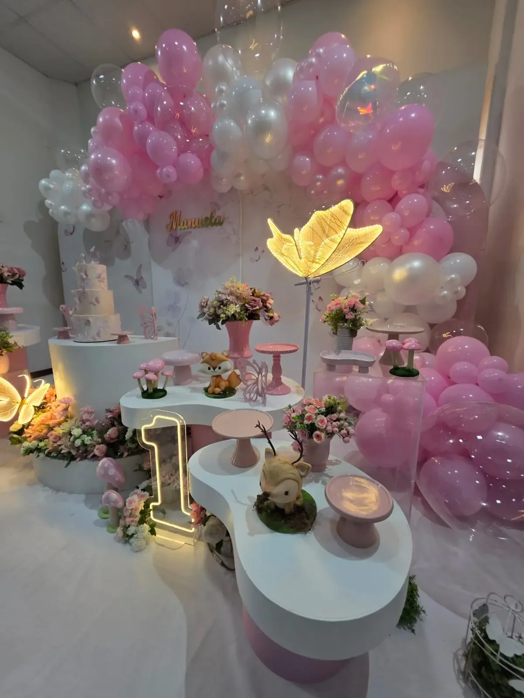
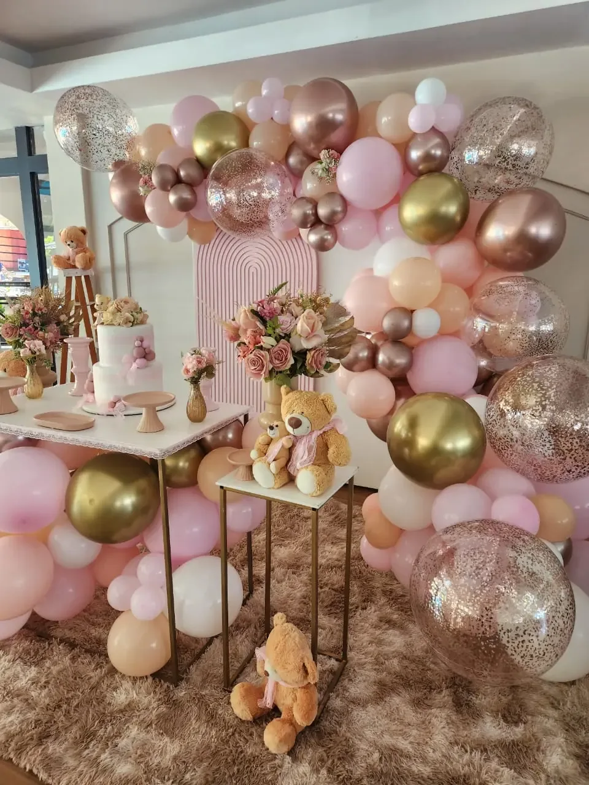
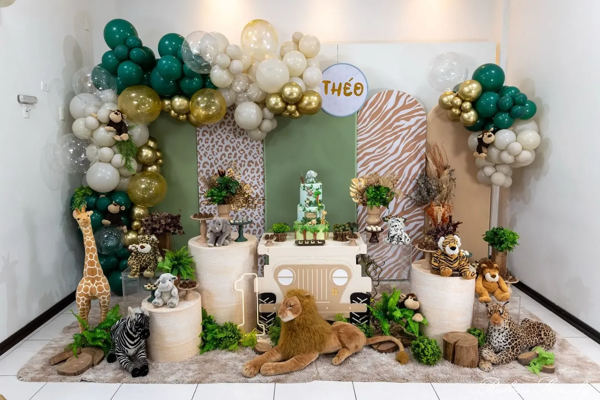
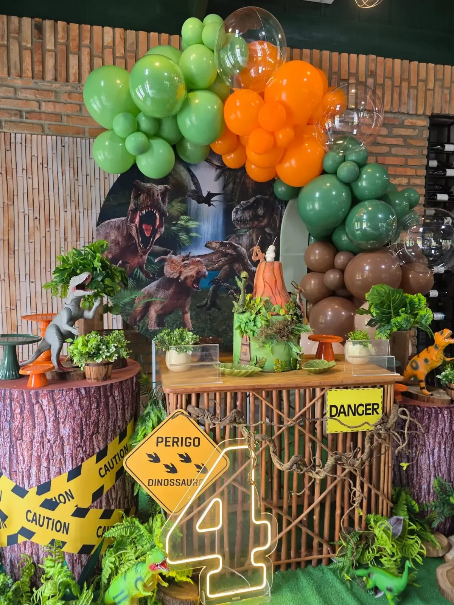
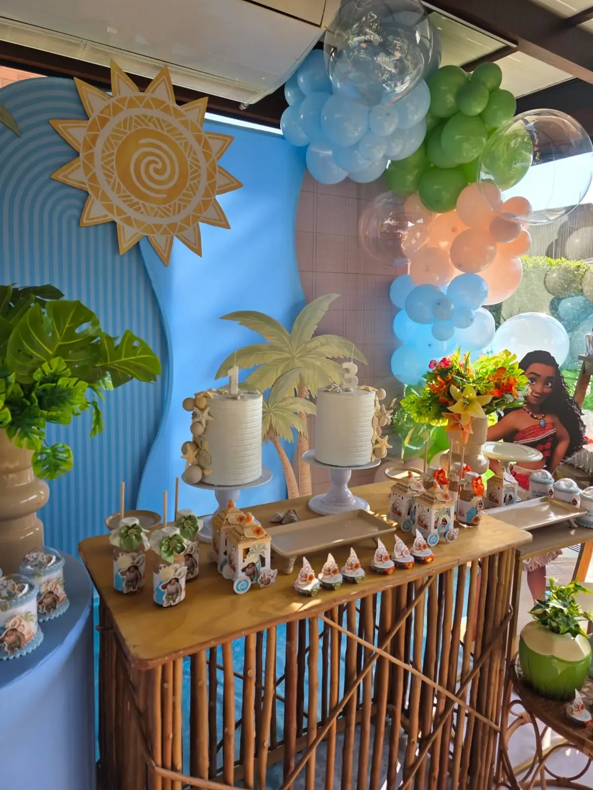
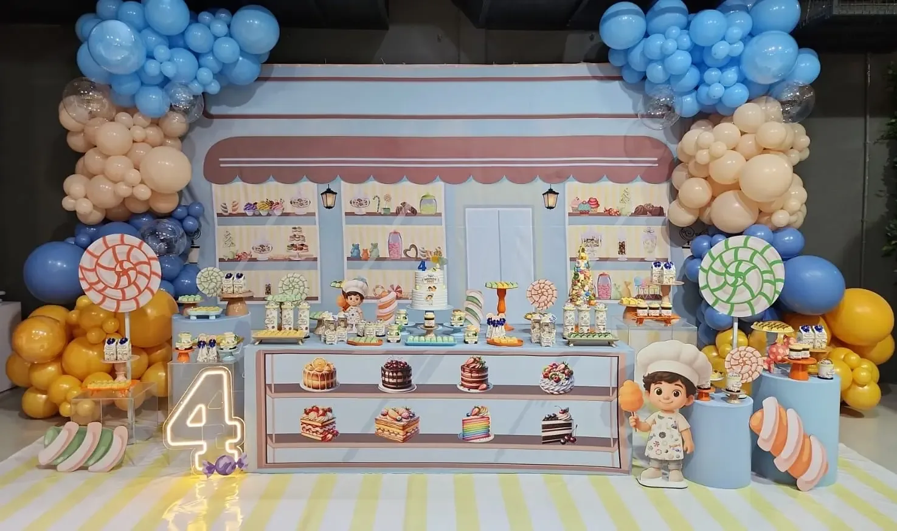
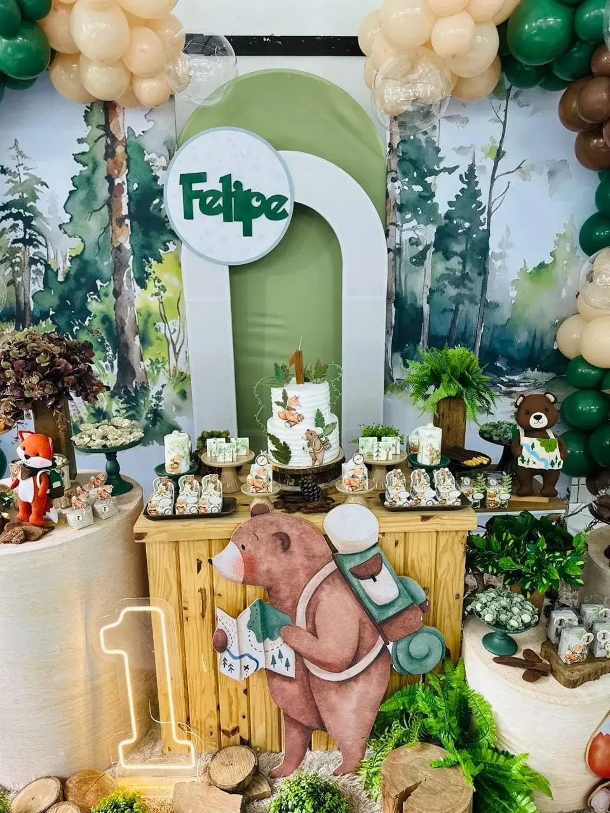
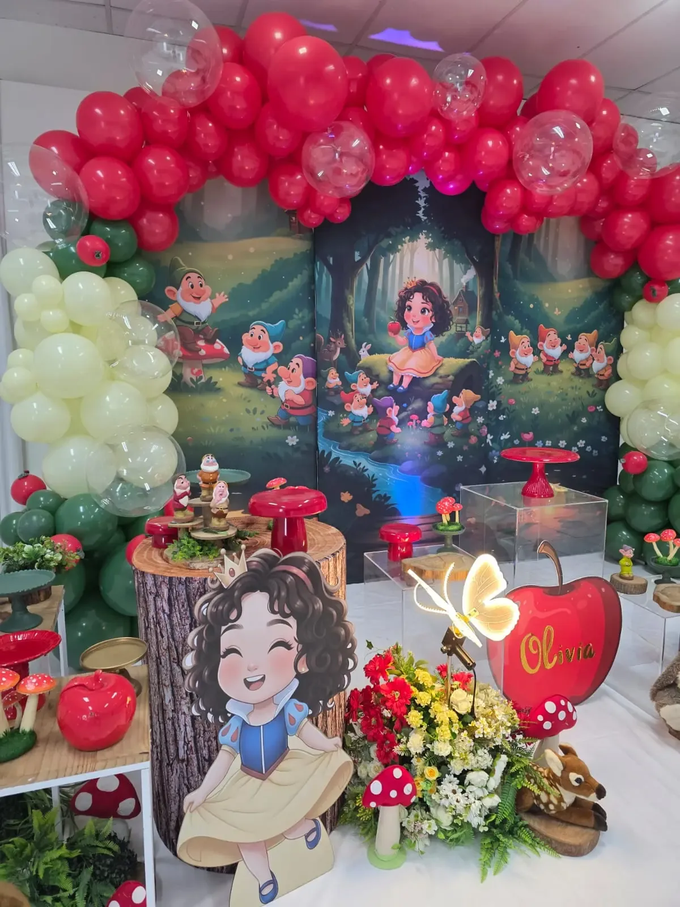

O dia passa.
O encanto
fica.
Transformamos suas ideias em cenários que emocionam — com cores, histórias e detalhes que fazem cada comemoração ser única.

01 / NOSSA ESSÊNCIA
Uma festa linda
é aquela que tem alma.
Não acreditamos em comemorações iguais. Cada família tem uma história, cada criança tem um universo e cada detalhe merece ser escolhido com intenção.
É assim que uma ideia se transforma em um cenário para guardar na memória.
Conheça nosso processo ↗

CENÁRIOS QUE CONTAM HISTÓRIASA infância passa depressa.
02 / A ARTE DE CELEBRAR
Uma festa, infinitas possibilidades.
Temas diferentes, o mesmo cuidado em criar um cenário que tenha a sua cara. Conheça algumas inspirações reais.

PORTFÓLIO REAL · JOINVILLE E REGIÃO 01 / 03DETALHES EM FOCO
Safari encantado.
Verdes, tons naturais e elementos que transformam a festa em uma pequena aventura.
A inspiração escolhida vai para o seu orçamento.
03 / PORTFÓLIO COMPLETO
Cada cenário,
um mundo novo.
Explore trabalhos realizados pela Festas By Valkiria. São estilos, cores e personagens diferentes — todos criados para momentos únicos.
para se inspirarESCOLHA SEU ESTILO ↓
04 / DA IDEIA AO ENCANTO
O caminho até
o grande dia.
Um processo leve e personalizado, da primeira conversa ao momento de celebrar.
Você sonha
Conte sua ideia, a data, o tema e o que imagina para a festa.
A gente cria
Conversamos sobre referências, estilo e possibilidades para o seu momento.
Vocês celebram
Preparamos uma decoração especial para viver e guardar na memória.

NOSSO OLHAR
O extraordinário
mora nos detalhes.
Texturas, balões, cores, luzes e pequenos elementos que dão vida a um universo só seu.
NOS BASTIDORES DE CADA FESTA
Uma festa termina.
A inspiração continua.
No Instagram compartilhamos nossas montagens e os detalhes de cada universo criado. Venha acompanhar as próximas histórias da Festas By Valkiria.
Seguir @festasbyvalkiria JOINVILLE · SANTA CATARINA



Uma seleção de fotos do nosso portfólio. Para acompanhar novas publicações, visite o Instagram oficial.
05 / VAMOS CELEBRAR?
Começa com
uma ideia.
Nos conte como imagina sua festa. Preparamos uma mensagem para você continuar a conversa direto no WhatsApp.
AINDA TEM DÚVIDAS?
É só
perguntar.
Vocês atendem fora de Joinville?+
Sim, atendemos Joinville e região conforme disponibilidade e distância. Consulte sua cidade pelo WhatsApp.
Com quanto tempo de antecedência devo reservar?+
Quanto antes, melhor — principalmente em datas disputadas. Confirmamos a disponibilidade para cada evento.
Posso escolher um tema personalizado?+
Sim! A proposta é desenvolvida a partir das suas referências, estilo e informações da comemoração.
Como funciona o orçamento?+
Preencha o formulário e o site abrirá o WhatsApp com uma mensagem pronta para continuar o atendimento.